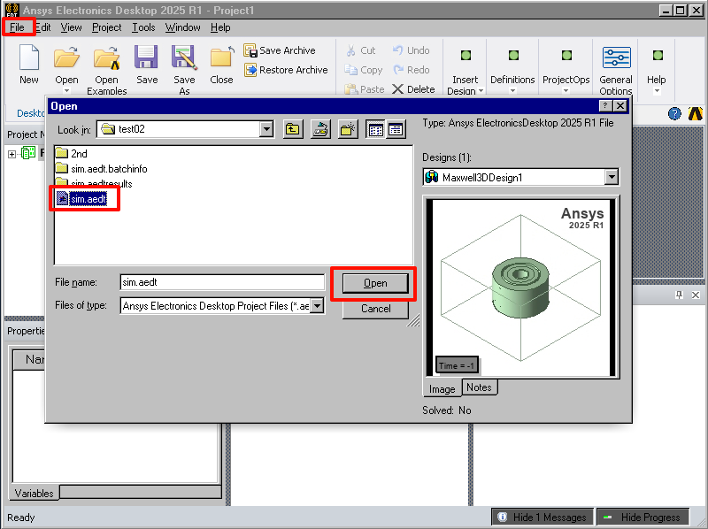
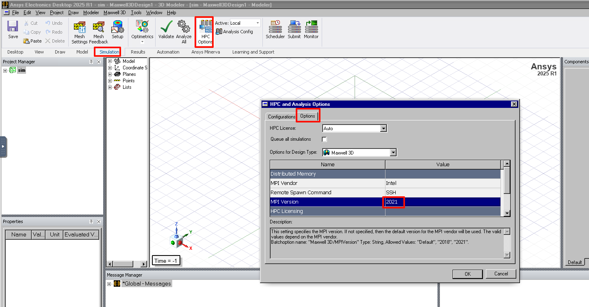
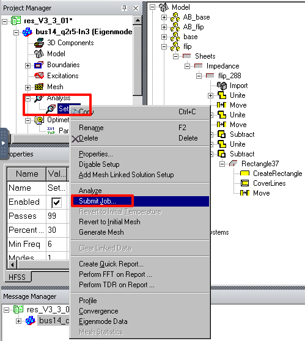
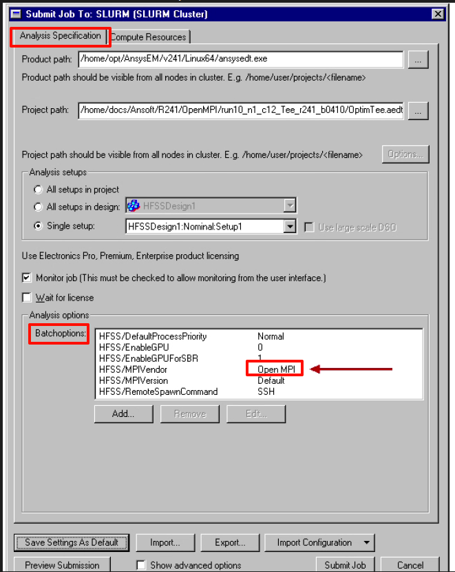
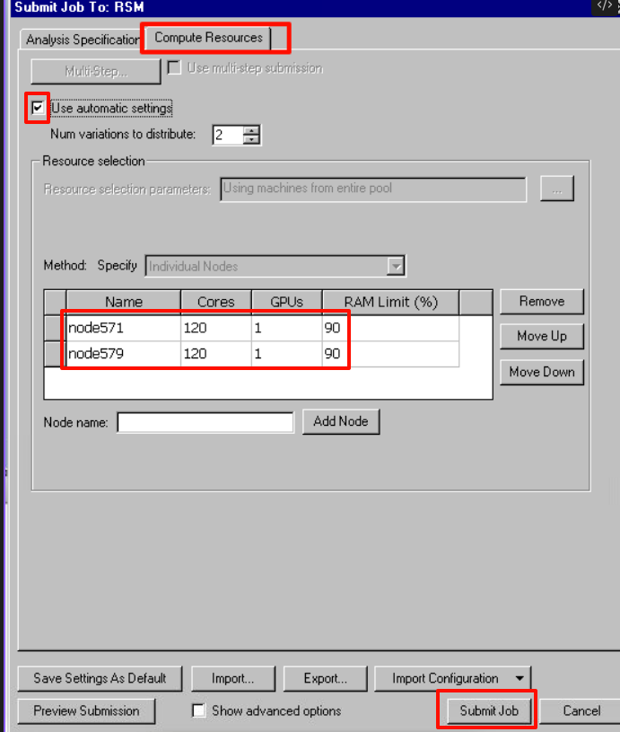
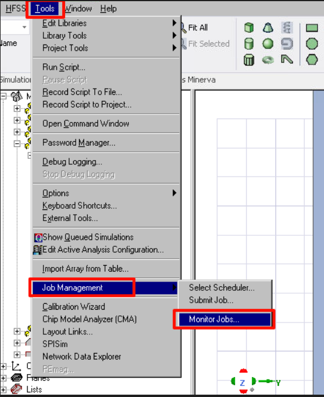
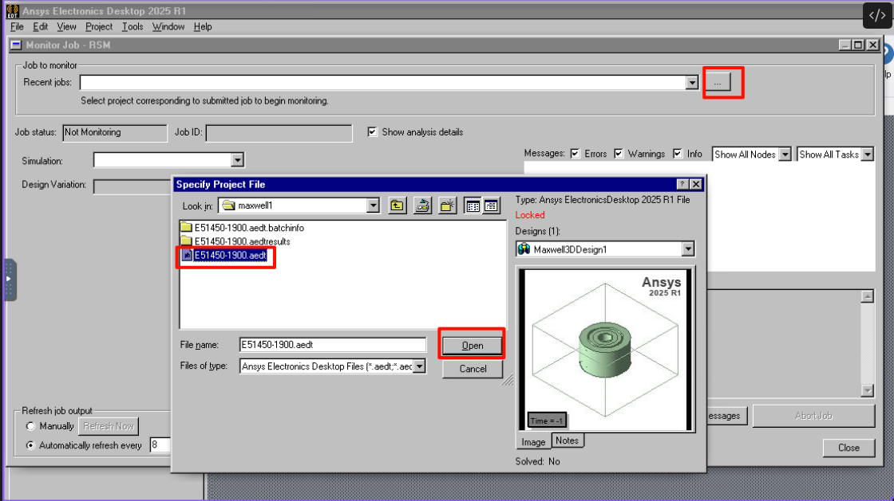
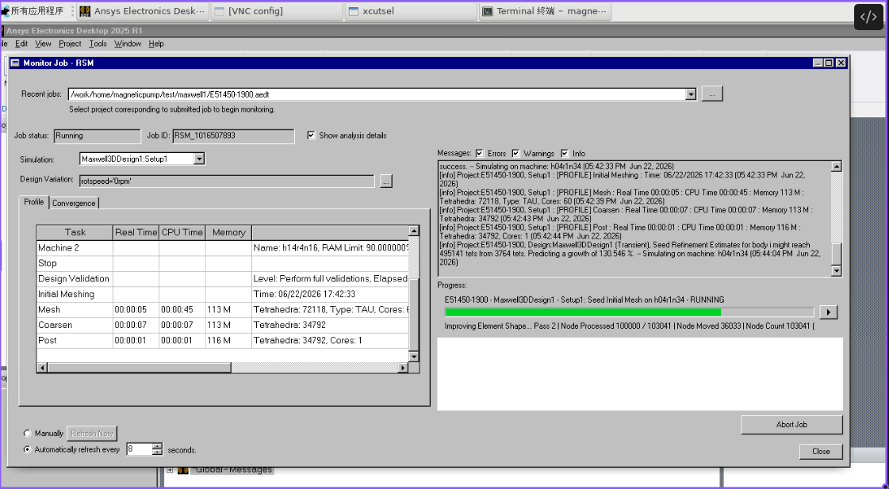
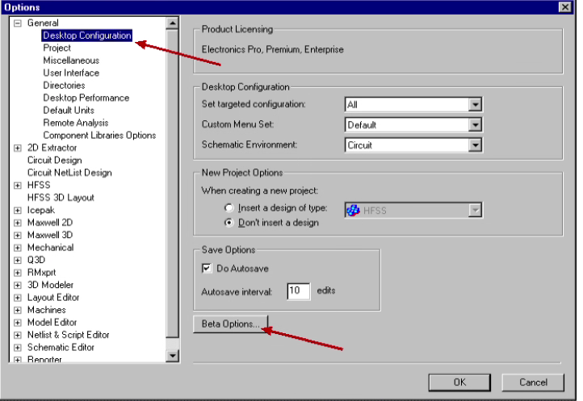
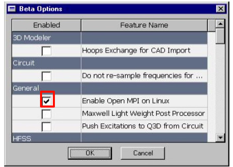

图形
图形计算设置
导入算例
点击左侧的File按钮，Open选中.aedt文件打开

并行设置
设置Intelmpi为2021

设置成功可以在提交作业的Batchoptions里查看
Tip
IntelMPI 2021可以在高版本glibc上使用，默认是2018在武汉、青海等集群上就默认用不了，或者设置成OpenMPI，也可以使用，但需要开启Beat功能
提交作业
点开左侧项目数，Analysis下右键Setup1,点击Submit Job

Analysis Specification下Batchoptions会打印当前使用的MPI信息

点击Compute Resources，勾选上automatic settings，设置好节点和核心数，Submit Job提交作业

提交成功之后作业界面会被关闭
监控作业
Tools > Job Management > Monitor Jobs

选中正在计算的.aedt文件打开，会打印出作业运行的相关日志


等待日志结束，作业完成后，再重新打开导入算例查看
补充
开启Beat，切换至OpenMPI
Tools > Options > General Options

